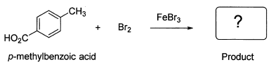

令和元年度（再試験） 問2 有機化学及び燃料
p－メチル安息香酸の臭素化反応で生成する化合物に関する次の記述の、【 】に入る語句の組合せとして、最も適切なものはどれか。
この臭素化反応は芳香族化合物でよく見られる芳香族【 a 】置換反応である。芳香環はアルケンに比べて【 a 】試薬に対する反応性が乏しいのでFeBr3のような【 b 】触媒が必要である。この触媒はBr2を分極させてベンゼン環との反応性を向上させる。ベンゼン環上の2つの置換基のうち、カルボキシ基－COOHは【 c 】配向性でメチル基は【 d 】配向性である。したがって反応の生成物は【 e 】と予測することができる。

| 選択肢 | a | b | c | d | e | |
|---|---|---|---|---|---|---|
|
①
|
求電子 | Lewis塩基 | メタ | オルト－パラ | 4－ブロモ－5－メチル安息香酸 | |
|
②
|
求核 | Lewis塩基 | メタ | オルト－パラ | 3－ブロモ－4－メチル安息香酸 | |
|
③
|
求電子 | Lewis酸 | メタ | オルト－パラ | 3－ブロモ－4－メチル安息香酸 | |
|
④
|
求電子 | Lewis酸 | オルト－パラ | メタ | 4－ブロモ－5－メチル安息香酸 | |
|
⑤
|
求核 | Lewis酸 | メタ | メタ | 3－ブロモ－4－メチル安息香酸 | |
正答
③ a：求電子、b：Lewis酸、c：メタ、d：オルト－パラ、e：3－ブロモ－4－メチル安息香酸
ルイス酸である臭化鉄触媒と臭素を用いたベンゼンの臭素化に関する問題です。
臭化鉄の鉄原子に臭素が結合することで強い求電子剤が生成します。
この反応は芳香族求電子置換反応です。芳香族化合物へ求電子剤が攻撃して水素原子と置換する反応であることからこの名称となっています。